26-网站集群拆分
上一节我们是部署了单机的LNMP，再往下，要进行拆分了，无论是性能、还是安全性，都务必要拆分。
拆分的内容有
- nginx集群
- mysql
- nfs共享存储
- 等
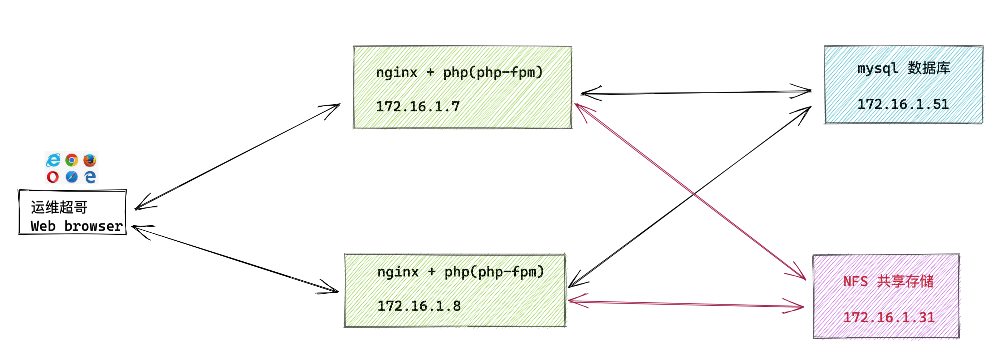
拆分思路
情况1
- 当前的单机环境已经装好了，数据也都有了，需要拆分到多个机器
- 需要考虑数据迁移
情况2
- 初试环境直接以集群模式部署，较为简单
必要因素
应用拆分为集群后，需要考虑的问题
- 数据的备份与恢复
- LNMP的每一个组件调用，从本地连接，改为了远程连接。
- mysql的远程连接授权。
拆分步骤
- 部署db-51机器，mariadb程序
- web-7的数据导出，发给db-51
- db-51导入数据
- 设置远程连接权限
- web-7测试远程连接db-51
- 修改php配置文件，连接远程的mysql地址db-51
- 访问网站，测试数据读写情况
一、拆分数据库
拆分背景
由于单台服务器运行LNMP，单机性能较差、安全性较低，且多个程序运行，抢夺内存资源；
- 内存吃满后，系统容易crash崩溃，导致进程异常退出等故障
- 单机若出问题，那就是毁灭性打击。
拆分解决了什么问题
1.增强数据安全性
2.增强数据库的处理能力
3.降低172.16.1.7服务器的压力
4.提升用户访问体验
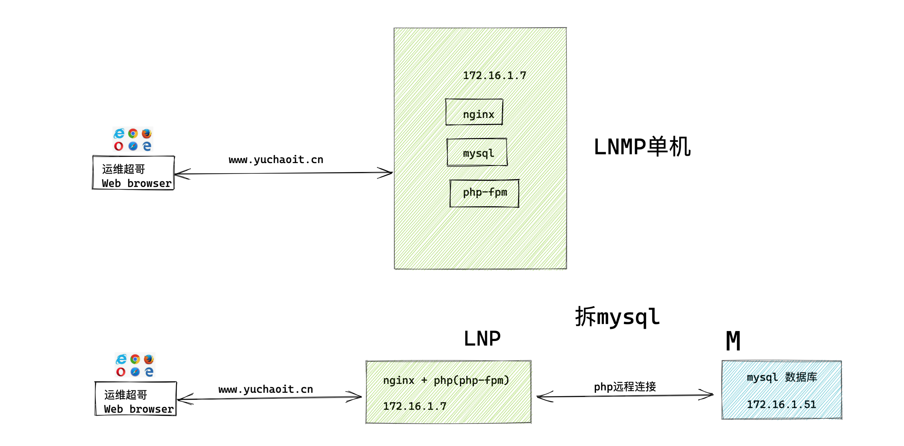
机器环境准备
web-7 172.16.1.7 nginx+php （应用服务器）
db-51 172.16.1.51 mysql （数据库服务器）
备份web-7上的数据库
1.导出web-7的mysql数据库，里面包含了几个产品的数据
[root@web-7 ~]#!mysql
mysql -uroot -pyuchaoit.cn
Welcome to the MariaDB monitor. Commands end with ; or \g.
Your MariaDB connection id is 155
Server version: 5.5.68-MariaDB MariaDB Server
Copyright (c) 2000, 2018, Oracle, MariaDB Corporation Ab and others.
Type 'help;' or '\h' for help. Type '\c' to clear the current input statement.
MariaDB [(none)]>
MariaDB [(none)]> show databases;
+--------------------+
| Database |
+--------------------+
| information_schema |
| mysql |
| performance_schema |
| test |
| wecenter |
| wordpress |
+--------------------+
6 rows in set (0.00 sec)
2.数据库备份
# -A 所有数据库
# --single-transaction 保证数据完整且一致
[root@web-7 ~]#mysqldump -uroot -p'yuchaoit.cn' -A --single-transaction > /opt/alldb.sql
3.查看备份数据
[root@web-7 ~]#ll /opt/alldb.sql -h
-rw-r--r-- 1 root root 2.0M May 13 18:34 /opt/alldb.sql
数据发给备份服务器
[root@web-7 /opt]#scp /opt/alldb.sql root@172.16.1.51:/opt/
二、部署db-51
安装、导入数据
[root@db-51 ~]#yum install mariadb mariadb-server -y
[root@db-51 ~]#systemctl start mariadb
[root@db-51 ~]#
[root@db-51 ~]#systemctl enable mariadb
Created symlink from /etc/systemd/system/multi-user.target.wants/mariadb.service to /usr/lib/systemd/system/mariadb.service.
[root@db-51 ~]#
设置密码
[root@db-51 ~]#mysqladmin password 'yuchaoit.cn'
导入数据
[root@db-51 /opt]#mysql -uroot -pyuchaoit.cn < /opt/alldb.sql
查看数据库
[root@db-51 /opt]#mysql -uroot -pyuchaoit.cn -e "show databases;"
+--------------------+
| Database |
+--------------------+
| information_schema |
| mysql |
| performance_schema |
| test |
| wecenter |
| wordpress |
+--------------------+
授权远程可访问
[root@db-51 /opt]#mysql -uroot -pyuchaoit.cn
Welcome to the MariaDB monitor. Commands end with ; or \g.
Your MariaDB connection id is 7
Server version: 5.5.68-MariaDB MariaDB Server
Copyright (c) 2000, 2018, Oracle, MariaDB Corporation Ab and others.
Type 'help;' or '\h' for help. Type '\c' to clear the current input statement.
MariaDB [(none)]> grant all privileges on *.* to 'yuchao01'@'%' identified by 'yuchaoit.cn';
Query OK, 0 rows affected (0.00 sec)
# 刷新权限表
MariaDB [(none)]> flush privileges;
Query OK, 0 rows affected (0.00 sec)
# 参数解释
授予所有权限 grant all privileges
所有库、所有表 *.*
授予访问的用户@所有主机 'yuchao01'@'%'
该授权用户的访问密码 identified by 'yuchaoit.cn';
测试该用户登录，读取数据
[root@db-51 /opt]#mysql -uyuchao01 -p'yuchaoit.cn' -h 10.0.0.51
Welcome to the MariaDB monitor. Commands end with ; or \g.
Your MariaDB connection id is 10
Server version: 5.5.68-MariaDB MariaDB Server
Copyright (c) 2000, 2018, Oracle, MariaDB Corporation Ab and others.
Type 'help;' or '\h' for help. Type '\c' to clear the current input statement.
MariaDB [(none)]> show databases;
+--------------------+
| Database |
+--------------------+
| information_schema |
| mysql |
| performance_schema |
| test |
| wecenter |
| wordpress |
+--------------------+
6 rows in set (0.00 sec)
三、修改web-7远程连接数据库
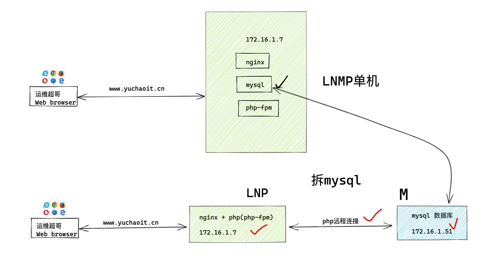
修改wordpress代码
该网站产品后端是php，数据也都是通过程序读写的数据库。
[root@web-7 /code/wordpress]#vim /code/wordpress/wp-config.php
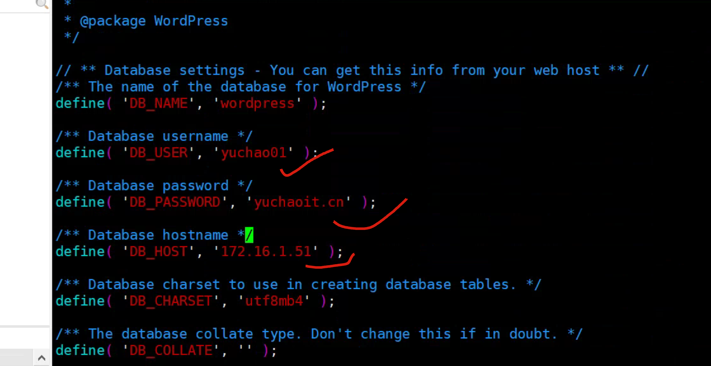
修改wecenter代码
[root@web-7 /code/wecenter]#cat system/config/database.php
<?php
$config['charset'] = 'utf8mb4';
$config['prefix'] = 'aws_';
$config['driver'] = 'MySQLi';
$config['master'] = array (
'charset' => 'utf8mb4',
'host' => '172.16.1.51',
'username' => 'yuchao01',
'password' => 'yuchaoit.cn',
'dbname' => 'wecenter',
'port' => '3306',
);
$config['slave'] = false;
$config['port'] = '3306';
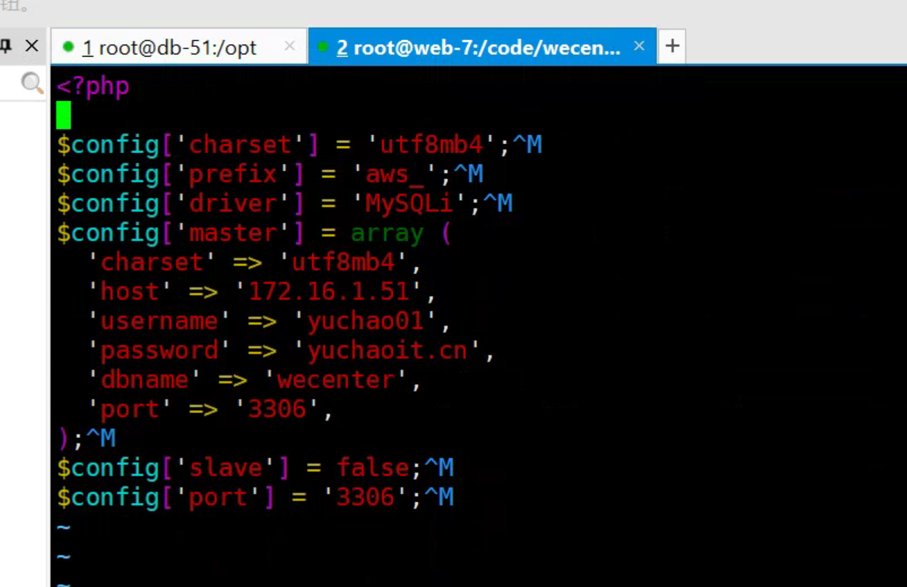
停止web-7的数据库
这也就是我们以前安装的数据库，停掉它。
[root@web-7 /code/wecenter]#systemctl stop mariadb
[root@web-7 /code/wecenter]#
[root@web-7 /code/wecenter]#ps -ef|grep mysql
root 14934 14679 0 19:06 pts/0 00:00:00 grep --color=auto mysql
[root@web-7 /code/wecenter]#netstat -tunlp|grep 3306
四、测试产品访问
本地做好dns解析
10.0.0.7 www.yuchaoit.cn wecenter.yuchaoit.cn wordpress.yuchaoit.cn
wordpress博客产品
- 访问静态数据，首页图片等
- 访问动态数据，登录，写博客
http://wordpress.yuchaoit.cn/wp-login 这是后台地址
试试你以前的密码还能用吗
yuchao01
chaoge666
正确登录，则数据是没问题的，以及看看文章数据还在吗
再发表一个新博客，查看数据库
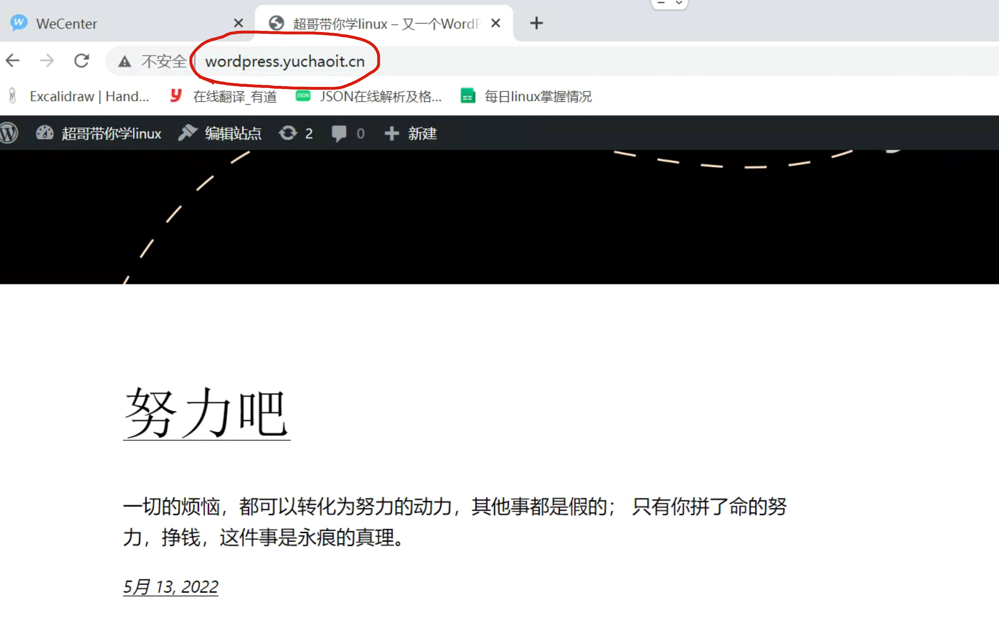
[root@db-51 /opt]#mysql -uyuchao01 -p'yuchaoit.cn' -h 10.0.0.51
Welcome to the MariaDB monitor. Commands end with ; or \g.
Your MariaDB connection id is 45
Server version: 5.5.68-MariaDB MariaDB Server
Copyright (c) 2000, 2018, Oracle, MariaDB Corporation Ab and others.
Type 'help;' or '\h' for help. Type '\c' to clear the current input statement.
MariaDB [(none)]> show databases;
+--------------------+
| Database |
+--------------------+
| information_schema |
| mysql |
| performance_schema |
| test |
| wecenter |
| wordpress |
+--------------------+
6 rows in set (0.00 sec)
MariaDB [(none)]> use wordpress;
Reading table information for completion of table and column names
You can turn off this feature to get a quicker startup with -A
Database changed
MariaDB [wordpress]>
MariaDB [wordpress]> select * from wp_posts;
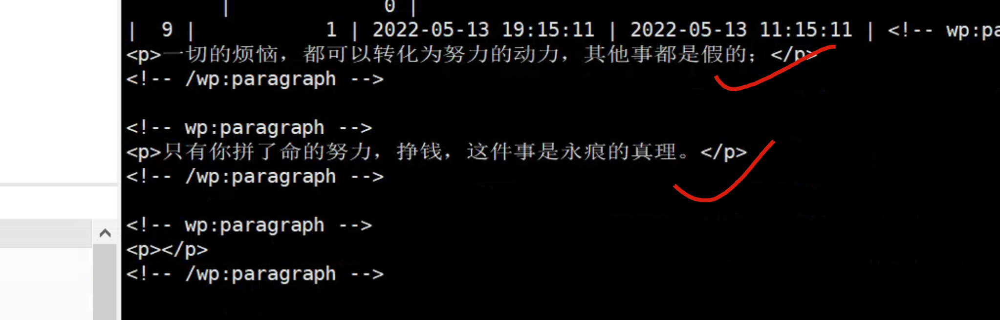
wecenter
http://wecenter.yuchaoit.cn/?/account/register/
试试是否可以注册新用户
cc01
chaoge666
注意，这里的域名是本地的测试域名。
登录后，数据库中找找，去db-51上找。
[root@db-51 /opt]#mysql -uyuchao01 -p'yuchaoit.cn' -h 10.0.0.51
Welcome to the MariaDB monitor. Commands end with ; or \g.
Your MariaDB connection id is 92
Server version: 5.5.68-MariaDB MariaDB Server
Copyright (c) 2000, 2018, Oracle, MariaDB Corporation Ab and others.
Type 'help;' or '\h' for help. Type '\c' to clear the current input statement.
MariaDB [(none)]>
MariaDB [(none)]> select user_name,password from wecenter.aws_users;
+-----------+----------------------------------+
| user_name | password |
+-----------+----------------------------------+
| yuchao01 | *851F4EE1AF6791802ED4A520AF0611F |
| cc01 | f689087c69b60ae88bad18a1206ea557 |
+-----------+----------------------------------+
2 rows in set (0.00 sec)
五、增加web节点
在淘宝十年架构演进中，超哥讲解了单机到集群的扩展，单个web-7，再加一个web-8
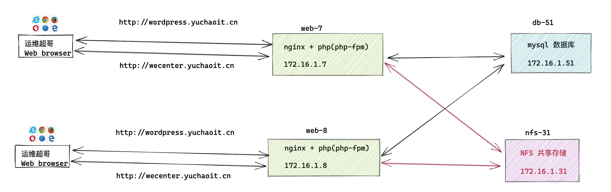
拓展web-8解决了什么问题
- 单机web-7能抗住的访问量是有局限性的，因此配置多个一模一样的web服务器即可，分摊这个压力，提高客户端的响应速度，请求不再集中到web-7。
- 如果web-7故障，导致网站直接挂掉
- 多个web节点，能保证业务稳定运行，扩展性更高了
- 明显的，提升了用户访问的网站的速度。
部署多个web服务器思路
- 同一个软件
- 同一个配置文件
快捷办法，从零部署可以这样做
1. 可以通过ansible剧本，一键部署多个web服务器
2. 准备好nginx软件包，部署内网自建yum仓库，统一部署。
如果已经有了web-7环境，只能再额外加了，或者你可以基于当前状态，需要部署web8，web9，web10，依然可以用ansible
3. 按照web-7的部署笔记，再来一遍，部署好web-8
手工部署web-8
创建用户
咱们这里只加一个web8，手工再来一遍即可。
[root@web-8 ~]#groupadd www -g 666
[root@web-8 ~]#useradd www -s /sbin/nologin -M -u 666 -g 666
[root@web-8 ~]#
安装nginx、php环境
确保安装环境和web-7一样，因此所有配置文件发过来即可
[root@web-8 ~]#scp -rp root@172.16.1.7:/etc/yum.repos.d/* /etc/yum.repos.d/
[root@web-8 ~]#scp -rp root@172.16.1.7:/etc/pki/rpm-gpg/* /etc/pki/rpm-gpg/
# 安装nginx
yum clean all
yum install nginx -y
# 安装php环境
yum install -y php71w-cli php71w-common php71w-devel php71w-embedded php71w-gd php71w-mcrypt php71w-mbstring php71w-pdo php71w-xml php71w-fpm php71w-mysqlnd php71w-opcache php71w-pecl-memcached php71w-pecl-redis php71w-pecl-mongodb php71w-json php71w-pecl-apcu php71w-pecl-apcu-devel
拷贝web-7的nginx配置文件
[root@web-8 ~]#scp -rp root@172.16.1.7:/etc/nginx/ /etc/
root@172.16.1.7's password:
default.conf 100% 1072 1.8MB/s 00:00
php.conf 100% 344 417.1KB/s 00:00
wecenter.conf 100% 361 560.3KB/s 00:00
wordpress.conf 100% 372 635.8KB/s 00:00
fastcgi_params 100% 1007 2.0MB/s 00:00
mime.types 100% 5231 9.2MB/s 00:00
nginx.conf 100% 648 1.6MB/s 00:00
scgi_params 100% 636 1.2MB/s 00:00
uwsgi_params 100% 664 1.4MB/s 00:00
[root@web-8 ~]#
拷贝web-7的php配置文件
[root@web-8 ~]#scp -rp root@172.16.1.7:/etc/php-fpm.d /et/
root@172.16.1.7's password:
www.conf 100% 18KB 8.2MB/s 00:00
[root@web-8 ~]#
拷贝web-7的代码（网站源码）
[root@web-7 ~]#cd /code && tar -zcf code.tgz ./*
[root@web-7 /code]#scp code.tgz root@172.16.1.8:/opt/
web-8解压缩源码到指定目录
[root@web-8 ~]#mkdir /code && tar -zxf /opt/code.tgz -C /code
[root@web-8 ~]#ls /code
hello.html mysql-test.php test-phpinfo.php wecenter wordpress
启动web-8的nginx、php
systemctl start nginx php-fpm
systemctl enable nginx php-fpm
停止web-7的所有服务
[root@web-7 /code]#systemctl stop nginx php-fpm
web-8日志检测
[root@web-8 ~]#tail -f /var/log/nginx/access.log
测试访问web-8
修改dns解析
这里需要改为8作为测试，后续我们继续学习 负载均衡服务器的部署，这里即可统一入口了。
#10.0.0.7 www.yuchaoit.cn wecenter.yuchaoit.cn wordpress.yuchaoit.cn
10.0.0.8 www.yuchaoit.cn wecenter.yuchaoit.cn wordpress.yuchaoit.cn
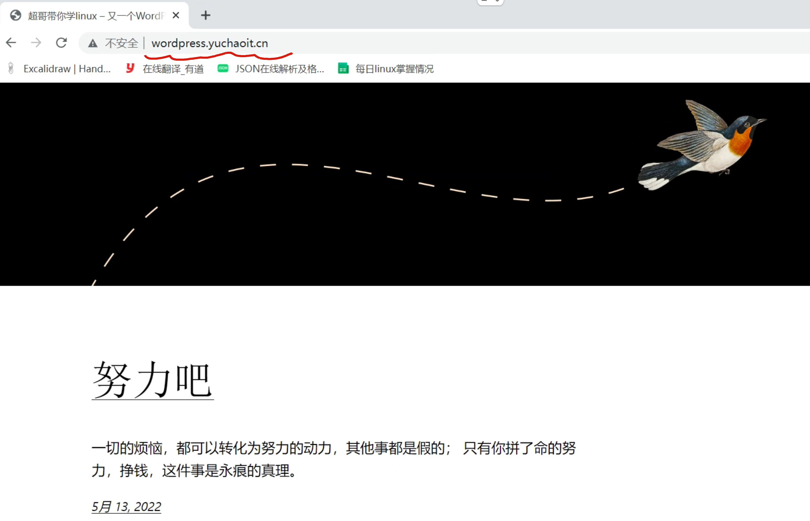
停止web-8的php服务
[root@web-8 /code/wecenter]#systemctl stop php-fpm
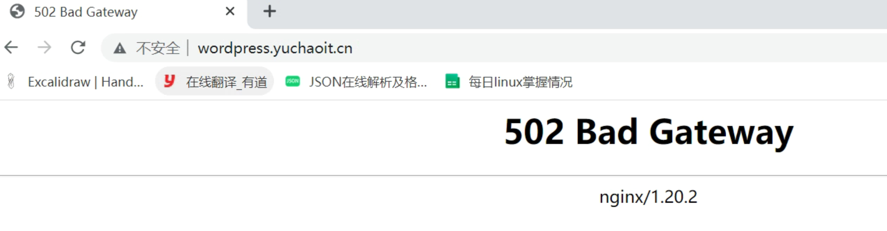
停止web-8的nginx服务
大门直接关了，你还访问个球？
[root@web-8 /code/wecenter]#systemctl stop nginx
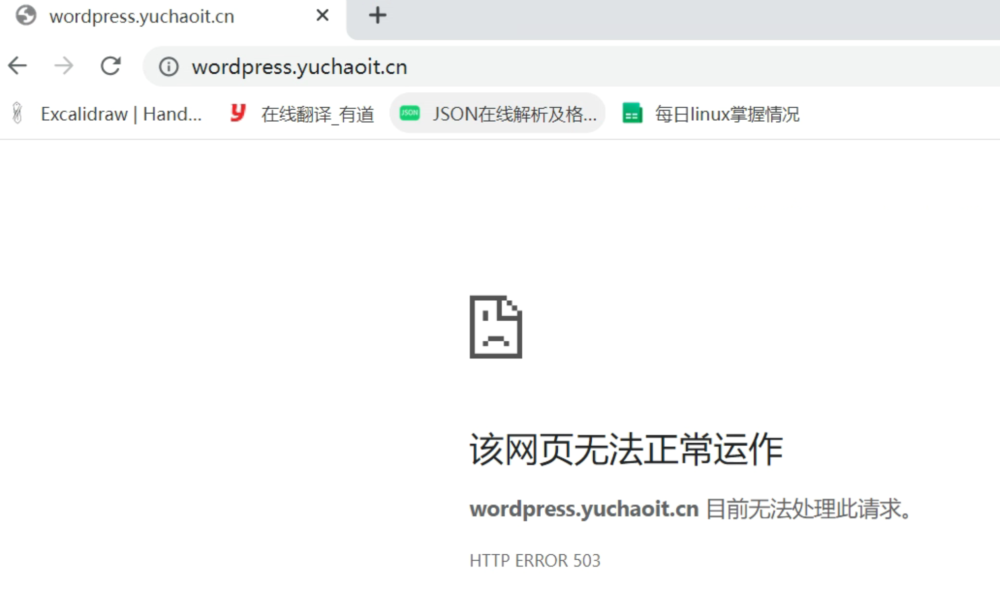
六、将静态资源挂载到共享存储
1.为什么要拆分独立静态资源服务器
后端的web服务器有多个，用户上传的数据、图片、视频等附件都会只传到单台一台Web服务器，导致其他服务器找不到数据。
因此必须要使用到共享文件存储服务器。
2.添加NFS解决了什么问题
- 多个web服务器的静态资源完全一致
- 有效节省web服务器的存储空间
- 统一管理了静态资源，便于升级CDN加速作为源站资源。
3.图解多个web节点
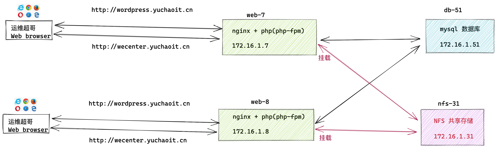
4.机器准备
web-7 nginx+php
web-8 nginx+php
db-51 mysql
nfs-31 nfs
5.部署文件服务器NFS-31
[root@nfs-31 ~]#cat /etc/exports
/web-data/wordpress/ 172.16.1.0/24(rw,sync,all_squash,anonuid=666,anongid=666)
/web-data/wecenter/ 172.16.1.0/24(rw,sync,all_squash,anonuid=666,anongid=666)
[root@nfs-31 ~]#mkdir -p /web-data/wordpress
[root@nfs-31 ~]#mkdir -p /web-data/wecenter
授权
[root@nfs-31 ~]#groupadd www -g 666
[root@nfs-31 ~]#useradd www -u 666 -g 666 -M -s /sbin/nologin
[root@nfs-31 ~]#chown -R www.www /web-data/
启动
[root@nfs-31 ~]#systemctl restart nfs
6.查看wordpress上传资源的目录
接下来就是修改两个web节点了。
[root@web-8 /code/wecenter]#systemctl start nginx php-fpm
发表博客，插入图片，找到图片所在的URL，查看这个资源往哪传。
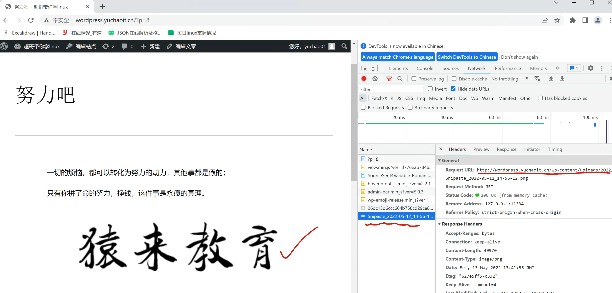
找到目录
[root@web-8 /code/wordpress/wp-content/uploads/2022/05]#pwd
/code/wordpress/wp-content/uploads/2022/05
7.备份所有静态资源
待会我们要挂载到NFS机器了，源数据先备份好。
[root@web-8 /code/wordpress/wp-content]#
[root@web-8 /code/wordpress/wp-content]#cp -a uploads/ uploads_bak
[root@web-8 /code/wordpress/wp-content]#ls
index.php languages plugins themes uploads uploads_bak
然后可以删除当前uploads目录的数据了，待会以NFS中数据为准。
8.挂载nfs
yum install nfs-utils -y
[root@web-8 ~]#showmount -e 172.16.1.31
Export list for 172.16.1.31:
/web-data/wecenter 172.16.1.0/24
/web-data/wordpress 172.16.1.0/24
挂载
[root@web-8 ~]#mount -t nfs 172.16.1.31:/web-data/wordpress /code/wordpress/wp-content/uploads
检查
[root@web-8 ~]#df -h |grep wordpress
172.16.1.31:/web-data/wordpress 17G 1.6G 16G 10% /code/wordpress/wp-content/uploads
9.恢复上传的图片数据
[root@web-8 /code/wordpress/wp-content]#cp -a uploads_bak/* uploads/
10.挂载写入fstab
[root@web-8 /code/wordpress/wp-content]#tail -1 /etc/fstab
172.16.1.31:/web-data/wordpress /code/wordpress/wp-content/uploads nfs defaults 0 0
11.检查网站是否恢复
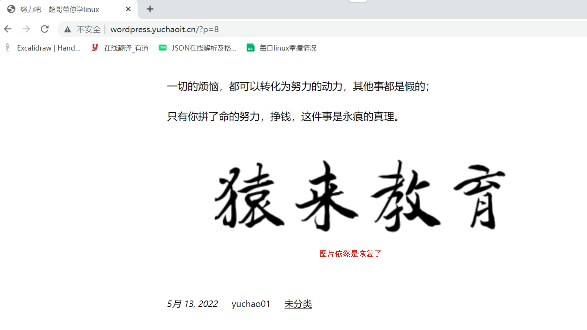
试试取消nfs挂载
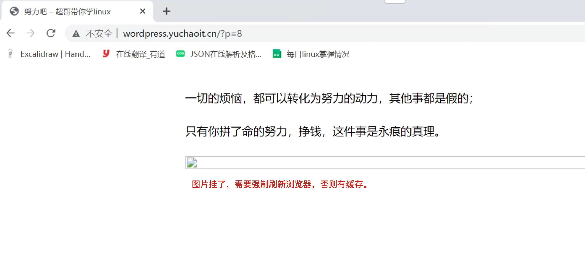
重新挂载试试。。
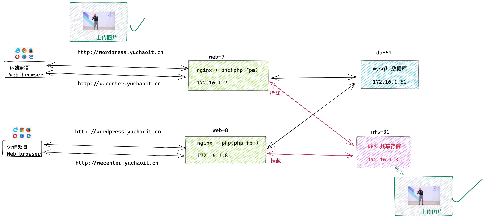
七、同样的步骤，在web7再来一遍。
最终确保web-8，web-7都可以访问到wordpress，且是是拆分开的LNMP环境。